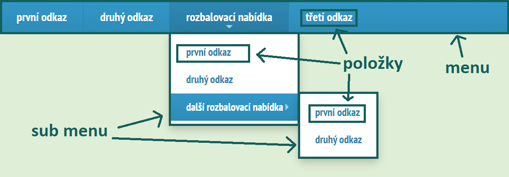

Jak SmartMenus používat
V minulé části jste se dozvěděli, jak SmartMenus nainstalovat. V této části si ukážeme, jak SmartMenus začít používat.
Zapsání menu v HTML
Pokud chceme vytvořit nějaké menu, tak si jej nejdříve musíme rozepsat v HTML kódu. Při použití SmartMenus vytváříme menu pomocí seznamu, který obsahuje odkazy a případně nějaké další vnořené seznamy, které představují rozbalovací nabídky. Každému menu, které vytváříme, bychom měli nastavit CSS třídu sm a nějakou třídu, která určuje jeho vzhled (můžeme použít vlastní, nebo nějaký, který nám SmartMenus nabízí). Třída sm obsahuje základní styly, které jsou potřebné aby menu správně fungovalo. Dále bychom mohli našemu menu přidat nějaké ID, abychom jej později v JQuery mohli snadno na stránce vybrat. Následující ukázka ukazuje, jak bychom mohli menu v HTML například zapsat:
<ul id="moje-menu" class="sm sm-blue">
<li><a href="#">první odkaz</a></li>
<li><a href="#">druhý odkaz</a></li>
<li><a href="#">rozbalovací nabídka</a>
<ul>
<li><a href="#">první odkaz</a></li>
<li><a href="#">druhý odkaz</a></li>
<li><a href="#">další rozbalovací nabídka</a>
<ul>
<li><a href="#">první odkaz</a></li>
<li><a href="#">druhý odkaz</a></li>
</ul>
</li>
</ul>
</li>
<li><a href="#">třetí odkaz</a></li>
</ul>Přidání funkcionality menu
Poté co jsme si naše menu napsali v HTML kódu, musíme mu přidat funkcionalitu aby fungovalo. To uděláme tak, že si pomocí JQuery naše menu vybereme a zavoláme metodu smartmenus. Pokud tuto metodu zavoláme bez žádných parametrů, tak se na menu aplikují výchozí nastavení.
// přidání funkcionality na menu s ID moje-menu
$('#moje-menu').smartmenus();Po tomto kroku by menu mělo fungovat.
Popis částí menu
V dalších částech tutoriálu budu občas používat slovo sub menu. Jedná se o menu, které slouží jako rozbalovací nabídka nějaké položky menu. Co přesně tím myslím se můžete podívat na následujícím obrázku. Do češtiny se dá sub menu přeložit jako podmenu, ale název sub menu mi přišel lepší, proto jej v tutoriálu používám.
Rozdíl mezi collapsible a normálním stavem menu
Menu vytvořené pomocí SmartMenus může nabývat dvou stavů: normální a collapsible. Menu má normální stav, když si naši stránku zobrazíme třeba na počítači a collapsible stav, když si stránku zobrazíme například na mobilu. Mezi těmito stavy existuje pár rozdílů. V normálním stavu se položky menu zobrazují vedle sebe a v collapsible módu pod sebou. Záleží samozřejmě na tom jak to máme nastylováno, ale většinou to tak je. Dále se například v collapsible módu neotevře sub menu při najetí myši na položku a tak dále.
Hlavní je vědět že tyto dva stavy existují a že pro menší obrazovky se aplikuje collapsible mód. Některá nastavení, která můžeme při inicializaci menu přenastavit, mají ve svém jméně slovo collapsible a týkají se jen collapsible módu. Proto je důležité vědět co to slovo collapsible vlastně znamená.
Nastavování menu
Při inicializaci menu můžeme smartmenus metodě předat objekt, pomocí kterého si naše menu můžeme různě nastavit. Co všechno můžeme nastavovat se dozvíte v dalších částech tutoriálu, následující ukázka jen ukazuje, jak se to dělá.
$('#moje-menu').smartmenus({
noMouseOver: true, // při najetí myši na položku menu se neotevře její sub menu
subIndicatorsText: '+' // k položkám, které obsahují sub menu se přidá text '+'
});Kromě nastavování menu při volání smartmenus metody jej můžeme nastavovat také pomocí atributu data-sm-options. Nastavení, která nastavíme přes tento atribut mají větší prioritu a přepíší nastavení nastavená při volání smartmenus metody, pokud je tam nastavíme taky. Já bych tento způsob nastavování menu asi nepoužíval, ale záleží na vás.
<ul id="moje-menu" class="sm sm-blue" data-sm-options="{ showTimeout: 150, subIndicators: false, subMenusMinWidth: '250px', hideFunction: function($ul, complete) { $ul.fadeOut(300, complete); } }">
<li><a href="#">první odkaz</a></li>
<li><a href="#">druhý odkaz</a></li>
<li><a href="#">třetí odkaz</a></li>
</ul>Stylování menu
Pokud nechceme použít žádný předdefinovaný vzhled, který nám SmartMenus nabízí, tak si můžeme vytvořit vlastní. Máme dvě možnosti. Buď si zmodifikujeme nějaký předdefinovaný vzhled, nebo si jej celý vytvoříme od začátku sami. O stylování menu je dále v tutoriálu samostatná kapitola, zde vám chci jen ukázat, jak si začít tvořit vlastní vzhled menu bez modifikace nějakého existujícího. Nechci totiž dále v tutoriálu v ukázkách používat žádný předdefinovaný vzhled, ale chci pracovat s nenastylovaným menu. I přesto že ale bude nenastylované, nějaké základní styly potřebuje, jinak nebude fungovat správně.
Pokud si vytváříme vlastní vzhled, tak musíme vždy začít s kódem, který ukazuje následující ukázka. Tento kód obsahuje media query, které zajišťuje, že se menu na větších obrazovkách nezobrazí v collapsible módu. Naše styly, které se mají aplikovat pro normální stav píšeme do tohoto media query a styly, které se mají zobrazit i pro collapsible stav píšeme mimo toto media query. Tento nenastylovaný vzhled, který následující ukázka ukazuje budu používat v dalších částech tutoriálu, proto jsem vám už teď chtěl ukázat, jak si pro menu začít vytvářet vlastní vzhled, i když tu o tom mám samostatnou část.
/* zde píšeme styly, které se aplikují i pro collapsible mód (zobrazení na mobilu) */
@media (min-width: 768px) { /* změněním této hodnoty změníme, kdy se přejde z collapsible stavu na normální stav */
/* tyto vlastnosti zajišťují změnění collapsible stavu na normální (není doporučeno je měnit) */
/* ---------- */
.sm-muj-vzhled ul{position:absolute;width:12em;}
.sm-muj-vzhled li{float:left;}
.sm-muj-vzhled.sm-rtl li{float:right;}
.sm-muj-vzhled ul li,.sm-muj-vzhled.sm-rtl ul li,.sm-muj-vzhled.sm-vertical li{float:none;}
.sm-muj-vzhled a{white-space:nowrap;}
.sm-muj-vzhled ul a,.sm-muj-vzhled.sm-vertical a{white-space:normal;}
.sm-muj-vzhled .sm-nowrap > li > a,.sm-muj-vzhled .sm-nowrap > li > :not(ul) a{white-space:nowrap;}
/* ---------- */
/* zde píšeme styly, které se aplikují jen pro normální stav (zobrazení pro počítač) */
}V této části jste se dozvěděli, jak SmartMenus plugin začít používat. Také jste se dozvěděli, jakým způsobem si můžete vaše menu nastavit. Na to navážeme v další části, ve které si projdeme nastavení, která se týkají interakce s menu.